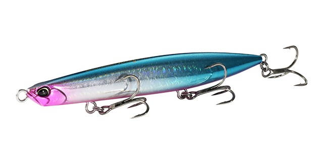
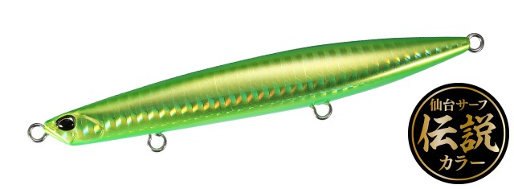
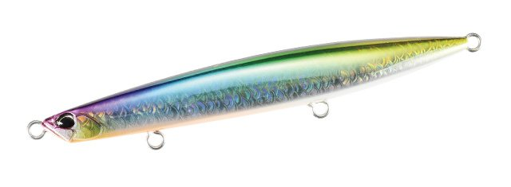
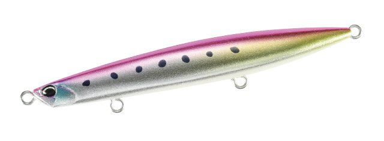
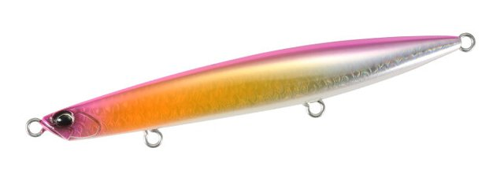

ビーチウォーカー ウェッジ120S
（Beach Walker Wedge 120S）
ビーチウォーカー ウェッジ120S（Beach Walker Wedge 120S）はDUOのシンキングペンシルです。
ゆったりとしたスイングアクション。スリムロングのシンキングペンシルが放つ存在感。
「釣れるはずのヒラメを釣りきる」ために、堀田光哉さんが作ったシンキングペンシルです。ファルクラムやフリッパーとは違う特性で、白泡の中でも目立つ存在感と、ミノーで攻められないシャローや根周りに強い浮力を持たせています。

画像出典:DUO公式HP
スペック
- メーカー
- DUO
- タイプ
- 重心固定・シンキング
- 全長
- 120mm
- 重量
- 38g
- レンジ
- 0.5〜3.0m
- フック
- ベリー#5・リア#4
- リング
- フックアイ#2.5
- カラー
- 全27色
- ターゲット
- ヒラメ・マゴチ
- 価格
- 2,475円（税込）
▼今すぐチェック

ビーチウォーカー ウェッジ120Sの特徴
ミノーやジグとは違うアプローチで、ヒラメを釣りきる
-
ゆったりとしたスイングで目立つ存在感
より大きく、ボリュームのあるボディでゆったりスイング。ヒラメが身を隠している白泡の中でもひときわ目立ち、「食ってください」と言わんばかりの存在感を出す。
-
シャローと根周りに強い浮力
ミノーでは攻めにくいシャローや根周りを引ける浮力があり、浅い場所でも根掛かりを避けながら探れる。
-
水平フォールと伸びる飛距離
食い気を誘う水平フォールと、矢のように飛んでグイグイ伸びる飛行性能。これまでのビーチウォーカーシリーズに無かった要素を詰め込んでいる。
ビーチウォーカー ウェッジ120Sの使い方
基本は遠投して、ただ巻きでゆったりしたスイングを見せます。浮力があるので、浅い場所ではゆっくり巻くだけで根掛かりを避けながら引けます。
深い場所や反応が無い時は、着底させてから巻き始めたり、巻きの途中で止めて水平フォールで食わせの間を作ったりしましょう。凪で渋い時も、スローに引けるのが強みです。
ビーチウォーカー ウェッジ120Sの得意な状況
サーフの白泡が出ている場所や、波のある日にヒラメを狙う時が得意です。
ミノーでは底に当たってしまうシャローや、根の周りを探りたい時にも出番があります。
ワンポイント
ミノーやメタルジグで反応が無い時に、アプローチを変えるとヒラメの反応が変わることがあります。同じ場所をウェッジに替えて通し直してみましょう。
ウェッジシリーズの使い分け
| モデル | 全長 重さ |
フック | こんな時に |
|---|---|---|---|
| 80S | 80mm 23g |
#6 | シリーズ最小。ベイトが小さい時や、ほかのサイズで反応が無い時に |
| 95S | 95mm 30g |
#5 | シリーズの基準。ハイピッチロールで、反応の薄いヒラメに |
| 120S | 120mm 38g |
#5・#4 | ゆったりしたスイング。白泡の中や、シャロー・根周りに |
| 140S | 140mm 40g |
#4 | シリーズ最大。コノシロなど大きいベイトを食べる大型ヒラメや青物に |
※数値は公式ページより。どれも重心固定のシンキングペンシルで、95S・120S・140Sのレンジは0.5〜3.0m。120Sのフックはベリー#5・リア#4。
価格（税込）は80S 2,200円／95S 2,255円／120S 2,475円／140S 2,585円。
迷ったら基準の95S、波や白泡でアピールしたい時は120S、ベイトが大きい時は140S、小さい時は80Sと、ベイトの大きさと波の強さで選ぶのが基本です。
オススメカラー
ウェッジ120Sは全27色。そのうち4色を紹介します（画像は公式より）。

AHA1008 メロメロメロン2026年の新色。目立つメロン系で、濁り潮やローライトに。

CYA0811 フェイクベイトベイトフィッシュに似せたナチュラル系。澄み潮の日中に。

CCC0810 UVLGピンクイワシイワシ系にピンクとUVを足したカラー。朝夕マズメに。

CYA0732 UVピンクサンライズGBピンクとゴールドのお腹で目立つアピール系。
画像出典:DUO公式HP
ビーチウォーカー ウェッジ120Sに似ているルアー
-
 フリッド125S
ブルーブルー
詳細はこちら＞
フリッド125S
ブルーブルー
詳細はこちら＞
後方重心で飛ぶ、サーフで使えるシンキングペンシル。
-
 アスリート12SSP
ジャクソン
詳細はこちら＞
アスリート12SSP
ジャクソン
詳細はこちら＞
120mmのサーフ向けシンキングペンシル。
-
 オーバードライブ107S
ダイワ
詳細はこちら＞
オーバードライブ107S
ダイワ
詳細はこちら＞
遠投できるヘビーシンキングペンシル。